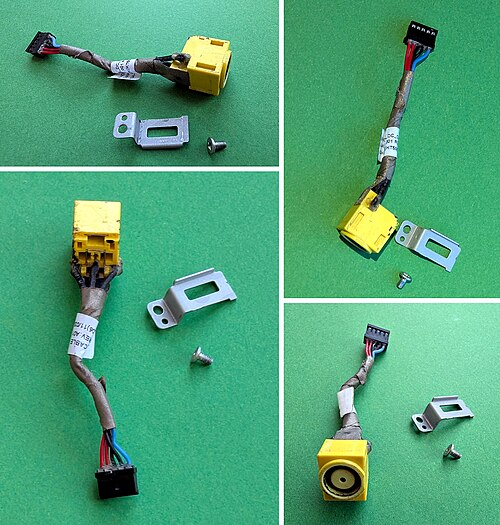
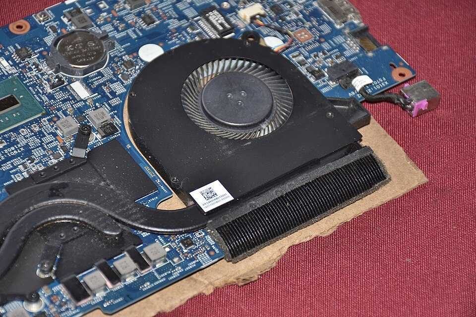

Test and replace a removable laptop charging jack
Separate an adapter fault from a worn barrel jack or laptop-side charging fault using a known-good charger and a removable DC-in harness.
Locate the replaceable part
On some older laptops, the barrel jack is a removable assembly with a short loom and a plug at the motherboard. Some jacks are soldered directly to a board. Locate the mechanical assembly first. The charger output, jack contacts, cable and motherboard input protection are separate stages. Some models also use a third contact to identify the adapter, and an “unknown adapter” message can involve more than the two power conductors.

Photo by Siarhei Besarab, scaled with on-page callouts. Original photo · CC BY-SA 4.0.


Photo by Saud, scaled with on-page callouts. Original photo · CC BY-SA 4.0.

Watch. The Dell clip shows where BIOS reports the adapter and battery separately. The model-specific 3D demonstration then shows why the jack loom on the Inspiron 3511 is easy to miss beneath the hinge. Dell’s adapter and battery BIOS video · Dell Support’s YouTube charging walkthrough · Dell’s Inspiron 3511 DC jack demonstration.
For a USB-C charging input, go to P87 USB-C inspection and charging diagnosis. This bench uses a removable barrel jack and leaves the AC adapter closed.
Confirm the symptom using one known-good adapter
- Use a plugged-in compatible charger only after an intact connector, case and cable have passed visual inspection. A port with melting, exposed conductors or severe corrosion stays unpowered. Record the exact host, charger rating and applicable service parts.
- Where the machine boots, compare the original and a known-good manufacturer-approved adapter from the outset and record the adapter type or wattage and battery health in BIOS. Try the known-good adapter in its reference host when necessary. Change one variable and test each condition after a fresh boot.
- If the adapter LED drops out immediately when plugged into an intact-looking host, disconnect it. Check the manufacturer’s troubleshooting path for possible overload or input damage before repeating the test. If BIOS reports a recognised adapter and the battery still fails to charge, compare battery health and charge settings before blaming the jack. Dell’s AC adapter diagnostic branches.
Inspect and compare the harness with power removed
For the Dell Inspiron 15 3511, open the base, isolate the battery cable and follow the manual for the right hinge and the DC-in cable route. Photograph the route before freeing the connector. Support the hinge and lid as shown and keep its fasteners in order. Lift the jack from its cradle once the loom is free. Dell Inspiron 3511 service manual.
- Inspect the socket body, center contact, bracket, loom at both exits and the motherboard plug. Compare them to an intact exact replacement by part number. A loose case bracket may let a sound jack move. Carbon, melted plastic or loose contacts call for a sound replacement assembly.
- Use the meter only on an isolated, documented passive harness whose service documentation confirms the pin map. Record the resistance of the shorted leads first. If you have a compatible unpowered mating connector, use it to access the jack contacts without forcing the meter probes into the socket. Measure each documented conduction path. Check adjacent paths for isolation only where the documentation specifies it. A continuity beep gives a threshold indication. Record the resistance and whether it changes under a gentle bend of the detached wire loom.
- If the pin map is absent, visually match the service assembly and do the known-good swap instead. Wire colours, plug shape and the number of conductors alone cannot establish a pinout. If the port is soldered to a board, use the relevant service procedure or send that work to a board rework bench.
Prove that the part fixed the original fault
Reinstall the bracket, original routing and strain relief. Close the hinge and base in the sequence specified for the model, and reconnect the battery at the point instructed in the manual. Reassemble before powering it. Repeat the BIOS adapter check and check stable charging under the same conditions with the same known-good adapter. Where available, run the OEM battery diagnostic and compare with the intake result.
| Test result | Shop decision |
|---|---|
| Original charger fails in two suitable hosts. Known-good charger works. | Set aside the charger. The harness swap has not been justified. |
| Both compatible chargers fail with the old jack. The same reference charger works with the exact replacement and the jack is mechanically secure. | Record the comparison and release the repair after the assembled charge test. |
| Known-good charger and exact known-good jack still fail in the suspect laptop. | Record the board connector or charging path as the next check. Do not write “charging IC failed” without evidence. |
Log the jack part number, adapter and recipient model, old and replacement observations, and BIOS adapter and battery results. This fits a salvage tag just as well as a customer repair report.